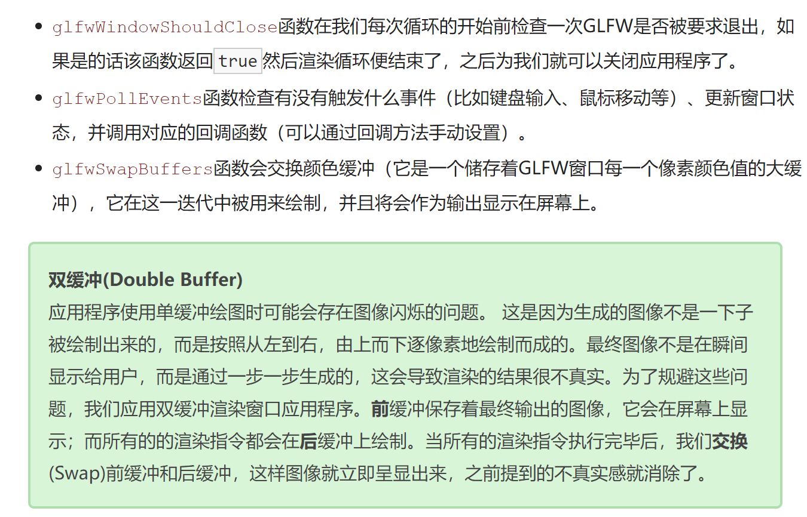
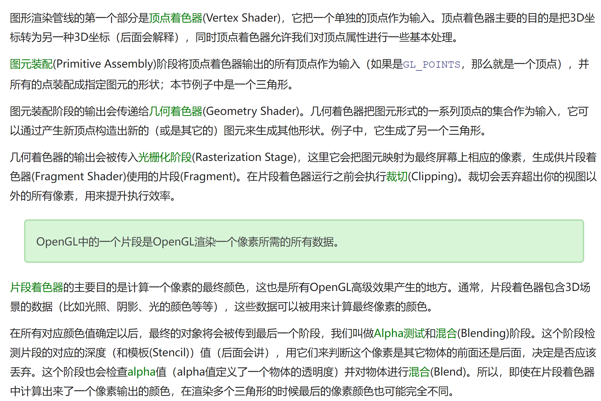
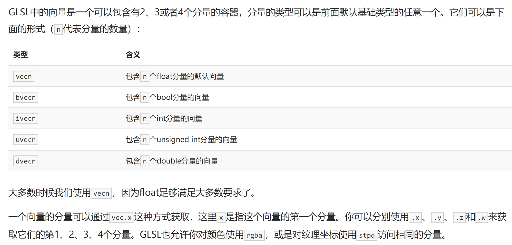
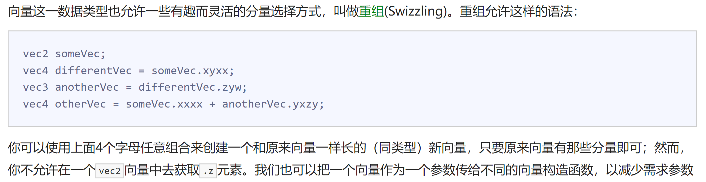
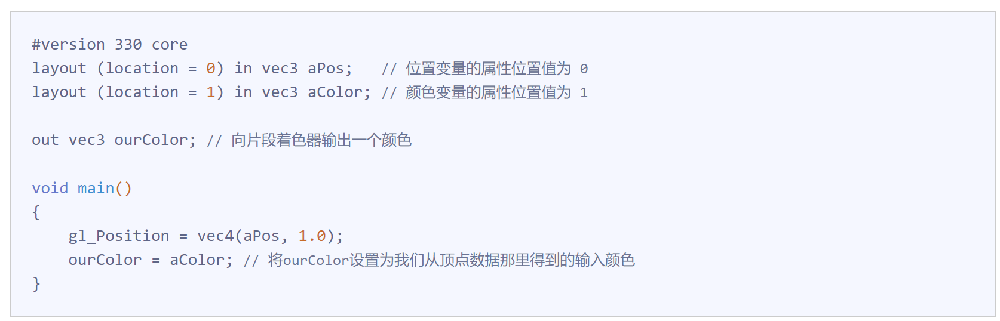
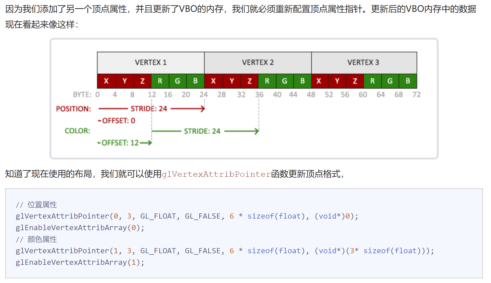

OpenGL_learning基础入门(0)
基础概念
- 核心模式与立即渲染模式
OpenGL3.2开始，规范文档开始废弃立即渲染模式，并鼓励开发者在OpenGL的核心模式Core-profile下进行开发，这个分支的规范完全移除了旧的特性。
立即渲染模式从OpenGL实际运作中抽象掉了很多细节，因此它在易于学习的同时，也很难让人去把握OpenGL具体是如何运作的。现代函数要求使用者真正理解OpenGL和图形编程，它有一些难度，然而提供了更多的灵活性，更高的效率，更重要的是可以更深入的理解图形编程。
- 扩展
1 | if(GL_ARB_extension_name) |
- 状态机
OpenGL自身是一个巨大的状态机State Machine：一系列的变量描述OpenGL此刻应当如何运行。OpenGL的状态通常被称为OpenGL上下文Context。我们通常使用如下途径去更改OpenGL状态：设置选项，操作缓冲。最后，我们使用当前OpenGL上下文来渲染。
当使用OpenGL的时候，我们会遇到一些状态设置函数State-changing Function，这类函数将会改变上下文。以及状态使用函数State-using Function，这类函数会根据当前OpenGL的状态执行一些操作。只要你记住OpenGL本质上是个大状态机，就能更容易理解它的大部分特性。
- 对象
1 | // 创建对象 |
窗口
- GLFW
GLFW是一个专门针对OpenGL的C语言库，它提供了一些渲染物体所需的最低限度的接口。它允许用户创建OpenGL上下文、定义窗口参数以及处理用户输入，对我们来说这就够了。
- GLAD
由于OpenGL驱动版本众多，它大多数函数的位置都无法在编译时确定下来，需要在运行时查询。所以任务就落在了开发者身上，开发者需要在运行时获取函数地址并将其保存在一个函数指针中供以后使用。幸运的是，有些库能简化此过程，其中GLAD是目前最新，也是最流行的库。
- 渲染循环
Render Loop
1 | while(!glfwWindowShouldClose(window)) |

三角形
基础概念
图元：为了让OpenGL知道我们的坐标和颜色值构成的到底是什么，OpenGL需要你去指定这些数据所表示的渲染类型。我们是希望把这些数据渲染成一系列的点？一系列的三角形？还是仅仅是一个长长的线？做出的这些提示叫做**图元
Primitive**，任何一个绘制指令的调用都将把图元传递给OpenGL。这是其中的几个：GL_POINTS、GL_TRIANGLES、GL_LINE_STRIP。OpenGL中的一个片段是OpenGL渲染一个像素所需的所有数据。
OpenGL渲染管线过程

顶点输入
**标准化设备坐标Normalized Device Coordinates, NDC**：一旦你的顶点坐标已经在顶点着色器中处理过，它们就应该是标准化设备坐标了，标准化设备坐标是一个x、y和z值在-1.0到1.0的一小段空间。
顶点着色器
1 | // 简易着色器 |
片段着色器
1 |
|
着色器程序
1 | //创建着色器程序 |
链接顶点属性
1 | glVertexAttribPointer(0, 3, GL_FLOAT, GL_FALSE, 3 * sizeof(float), (void*)0); |
- OpenGL绘制物体流程
1 | // 0. 复制顶点数组到缓冲中供OpenGL使用 |
顶点数组对象VAO
顶点数组对象Vertex Array Object, VAO可以像顶点缓冲对象那样被绑定，任何随后的顶点属性调用都会储存在这个VAO中。这样的好处就是，当配置顶点属性指针时，你只需要将那些调用执行一次，之后再绘制物体的时候只需要绑定相应的VAO就行了。这使在不同顶点数据和属性配置之间切换变得非常简单，只需要绑定不同的VAO就行了。刚刚设置的所有状态都将存储在VAO中
VAO和VBO的区别？VAO是一个保存了所有顶点数据属性的状态结合，它存储了顶点数据的格式以及顶点数据所需的VBO对象的引用。VAO本身并没有存储顶点的相关属性数据，这些信息是存储在VBO中的。
OpenGL的核心模式要求我们使用VAO，所以它知道该如何处理我们的顶点输入。如果我们绑定VAO失败，OpenGL会拒绝绘制任何东西。
1 | // ..:: 初始化代码（只运行一次 (除非你的物体频繁改变)） :: .. |
索引缓冲对象EBO/IBO
通过EBO，对于相同的顶点不用重复存储两次，而是使用索引来访问相同的节点。
1 | float vertices[] = { |
当目标是GL_ELEMENT_ARRAY_BUFFER的时候，VAO会储存glBindBuffer的函数调用。这也意味着它也会储存解绑调用，所以确保你没有在解绑VAO之前解绑索引数组缓冲，否则它就没有这个EBO配置了。
着色器
GLSL
着色器是使用一种叫GLSL的类C语言写成的。GLSL是为图形计算量身定制的，它包含一些针对向量和矩阵操作的有用特性。
一个典型的着色器有下面的结构：
1 |
|
GLSL特殊数据类型
向量

向量重组

输入与输出
顶点着色器应该接收的是一种特殊形式的输入，否则就会效率低下。顶点着色器的输入特殊在，它从顶点数据中直接接收输入。为了定义顶点数据该如何管理，我们使用location这一元数据指定输入变量，这样我们才可以在CPU上配置顶点属性。
另一个例外是片段着色器，它需要一个vec4颜色输出变量，因为片段着色器需要生成一个最终输出的颜色。如果你在片段着色器没有定义输出颜色，OpenGL会把你的物体渲染为黑色（或白色）。
Uniform
Uniform是一种从CPU中的应用向GPU中的着色器发送数据的方式，但uniform和顶点属性有些不同。首先，uniform是全局的(Global)。全局意味着uniform变量必须在每个着色器程序对象中都是独一无二的，而且它可以被着色器程序的任意着色器在任意阶段访问。第二，无论你把uniform值设置成什么，uniform会一直保存它们的数据，直到它们被重置或更新。
如果你声明了一个uniform却在GLSL代码中没用过，编译器会静默移除这个变量，导致最后编译出的版本中并不会包含它，这可能导致几个非常麻烦的错误，记住这点！
在顶点着色器中输入坐标和颜色
先在顶点着色器中定义layout(location=x)顶点属性的位置值

重点是顶点属性指针的配置

着色器类
着色器类基本架构(函数没有展开写)
1 |
|